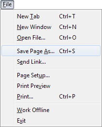
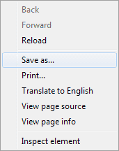
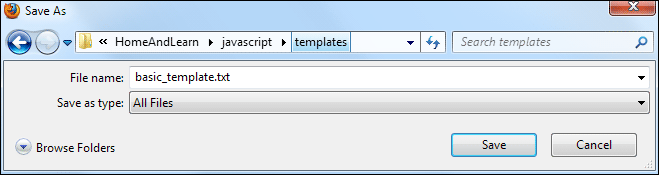
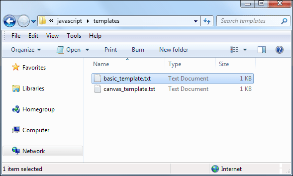
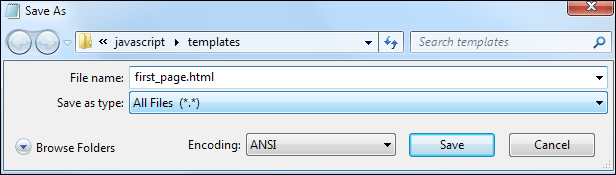
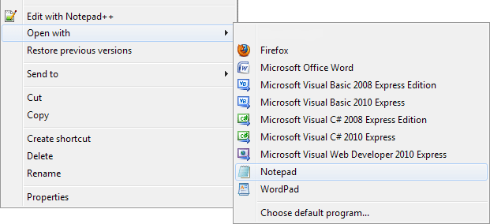
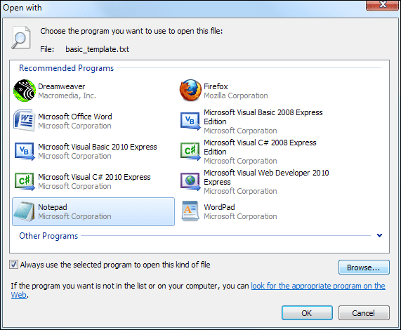

Useful Javascript Templates for this Course
We've created a couple of Javascript template files for you. Click below to open the files in a new window. You can just download the basic template for now, as the canvas template is for much later. If you're not sure how to turn a text file into a HTML page then read on.
Get the Basic Template Text File Here
Get the Basic Canvas Template text File Here
When you click a link above, a file will open in a new tab or window. The file will be a text file. Now click File > Save Page As, if you're using Firefox:

In Internet Explorer, Opera and Safari, click File > Save As. (You may have to press the left ALT key on your keyboard in IE and Safari to see a File menu at the top.)
In the Chrome browser, simply right click the page and you'll see a menu appear. Click Save As from the options:

In all browsers, you should then see a dialogue box appear. Choose a location to save the text file to. Then make sure the Save As Type area at the bottom says Text Document (Opera and Chrome), or Text Files (IE and Safari), or All Files (Firefox).

Click Save and you'll have a template text file on your computer.
Create a Web Page from your Template
To turn your template into a HTML page, open the text file using Windows Explorer or Finder on the Mac:

When you double click your file, it will open in a text editor. Click File > Save As again. In the Save As Type area change it to All Files. (You don't need to do this if you're using TextEdit on a Mac.) Now type a new name, followed by the extension .html:

When you click Save, you'll have a new web page.
To get at the code for editing, open an Explorer or Finder window again. Right click the HTML page you want to edit. You should see an Open with option on the menu:

If you've installed Notepad++ you can simply click the Edit with Notepad++ option rather than Open with. If you don't see a normal Notepad option like ours above, then click the Choose default program option at the bottom. If Notepad is still not there when the dialogue box appears, click the Browse button:

When the Browse dialogue box appears, navigate to the directory C:\Windows\System32. Then select Notepad.exe.
Here are the templates again:
Get the Basic Template Text File Here
Get
the Basic Canvas Template text File Here
In the next part, we'll take a look at something called debugging.